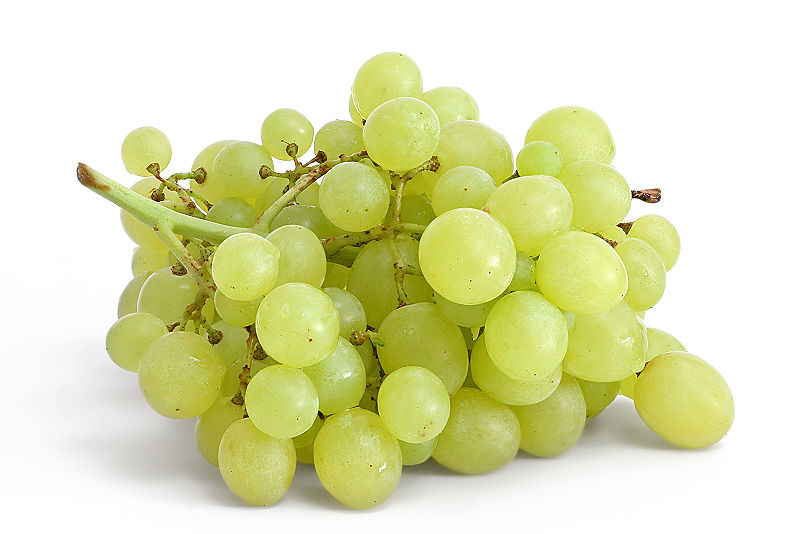

Struguri

Strugurele este fructul (numit bacă) viței de vie. Strugurele este unul dintre cele mai cultivate fructe din lume, cu 68 milioane de tone produse în 2010, în urma citricelor (124 milioane de tone), bananelor (102 milioane de tone) și a merelor (70 milioane de tone).[1] Strugurii apar în formă de raceme (ciorchini) compuse din multe boabe, care sunt denumite în botanică bace, de dimensiuni mici și de diferite culori.